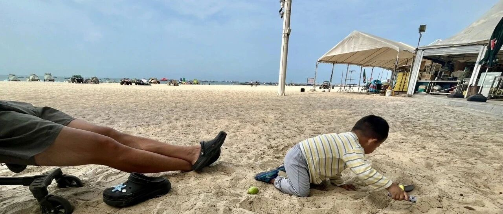

张雪峰去世感悟：财富自由不等于人生自由。
点击关注 秋秋在分享
一起实现财务自由退休
大家好，我是秋秋呀！
我不是很关注娱乐八卦，但是像大S去世唏嘘一样，这两天张雪峰老师的事，也让我心里沉了一下，有钱真的不等于人生自由。
我们总想着存钱以后有钱看病，然而有些疾病抢救时间却只有几分钟，根本没时间去救治。时间反而对每个人都一样公平。
在普通人眼里，他早就财富自由了，有好几亿身家，按道理可以歇歇了享受生活。
可回看他的作息，经常熬夜直播，已经被留院过一次，还在硬撑着跑步，有时候直播还会吃一些不健康的食物。
为什么不能停下呢？都这么有钱了？
1.身后有一大帮团队要养。
有人会说为功名所累，其实我感觉是当你所处的位置越高，责任就越大。我们总向往资产千亿，殊不知那时候你的钱就不属于你了。
他一旦停止，公司业绩下滑，确实对粉丝对员工都不好交代。
这种心情我也能理解，像我之前也自己做过公司，解散的时候一起赚到钱的伙伴表示：以后不知道哪里还有这么轻松的活。我只有一两个合伙人，他可能公司几百人。
所以哪怕他再有钱，也没了属于自己的人生自由。财富自由，真的不等于人生自由，敢于放下一切的是少数人。
2.总觉得还年轻有以后。
我看过康熙一个片段。罗姐劝嘉宾一定要买房，她已经买了五六套，到70岁开始卖，一套很多钱，老年快快乐乐的。

旁边嘉宾呛，万一你69岁就噶了呢。她说，不可能，我每年都去做体检，连医生都要问我怎么保养的，我爸活到94多岁耶。
后来，她59岁就去世了。
人生如浮舟幻梦，一切都很突然。
我们可以未雨绸缪，却不能把人生想做的事都放在以后。当下，才是生活的全部内容。
老话说“妻财子禄寿，不能皆有”，家庭地位名声权力金钱寿命，总不能样样好。
以前我觉得是唬人的，所有的事情都要争取才对，现在才知道这是人生真理。
以前我总想着什么都要：家庭好、有钱、孩子乖、事业顺、身体棒。可是时间是有限的，得到一些，必然会失去一些。
像张老师有了财和禄，却失去了最宝贵的健康和休息。
现在我不再羡慕那些有权有地位的人，我怕身体换名利，最后遗憾离场。
如果非要选，我宁愿是有健康的身体、幸福的家庭、富裕但不惹眼的财富。名禄反而是身外事。
人生不过三万多天，我们都是普通人，更要意识到人生小满胜万全。
这也是我26岁提前退休的初衷了！我肯定会失去了一些，却得到了更多。
希望大家都对自己好一点，珍惜当下，尽可能的获得人生自由吧。

此刻我们一家人在海滩🏖️
我和大老王躺着、宝宝在玩沙。
这就是我追求的人生自由。